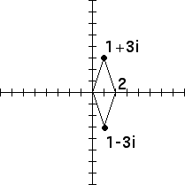
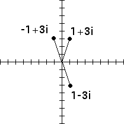
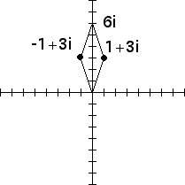

1. Notice that geometrically the conjugate of a complex number is the reflection of that number across the x-axis. Consequently the parallelogram addition law gives an easy representation of the of fact that the sum of a complex number and its conjugate is twice its real part.
|  |
2. Geometrically the negative of a complex number is obtained by reflecting the complex number across both the x- and y-axes. Consequently, the negative of the conjugate is just the reflection across the y-axis. The parallelogram law gives an easy interpretation of a complex number minus its conjugate.
|  |  |
Return to Samples.